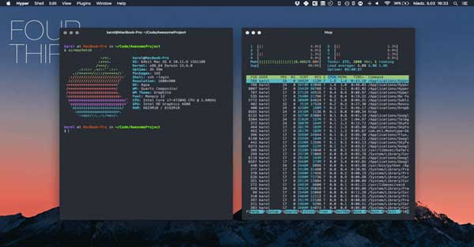

Hi, welcome to my website!
My name is Daniel Workman. I'm a junior full stack developer who is learnining to code at Coder Academy. I've completed a Bachelor of Commerce majoring in Mareting at UOW and currently work in a marketing agency. I love surfing, music, reading, golf, tennis, the gym and any sort of outdoor activity. Despite my love of the great outdoors I also love to code! Coding is great as it presents challenges daily and is an avenue for continuous learning.
My Website
This is a showcase of my website and the coding it required to build.
My Terminal App
This is a detailed showcase of a termainal app that I have built using Ruby.
